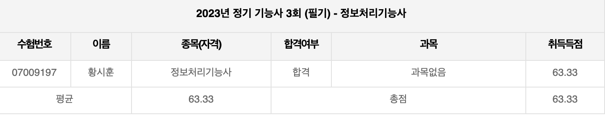
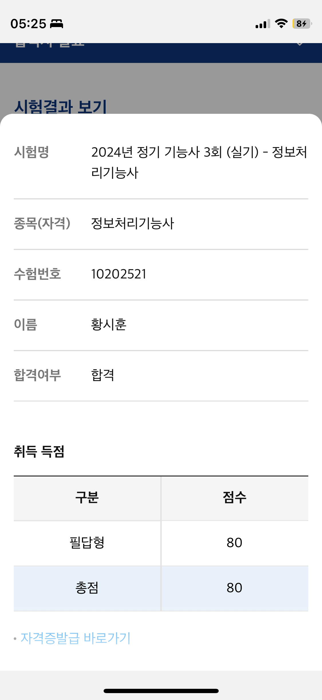
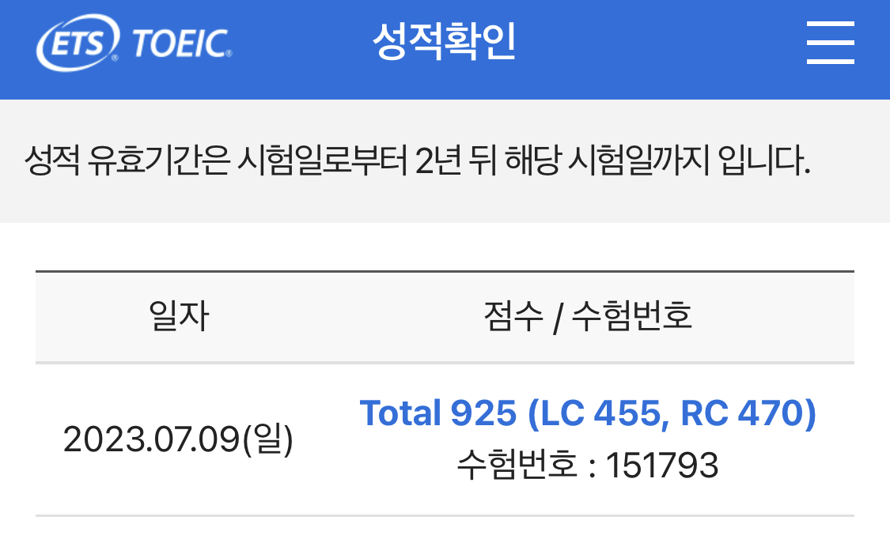

Republic of Korea Air Force
September 2024
My journey of applying for Air Force and (potentially) serving.
Application :
Applying at the begining of July 2025 and enrolling in October 2025.
통신전자전기
- Degree : BSc Physics
- National Certification : 정보처리기능사 (Information Processing Technician)
- Preperation : reading these 2 books is more than enough.
- 이기적 정보처리기능사 필기 기본서 (~ 8 hours)
- 이기적 정보처리기능사 실기 기본서 (~ 32 hours)
- 필기

- 실기

- Certificate
>certificate
- English : Toeic (expires on 9th of Jul 2025, which has to be before the end of the July application window)
